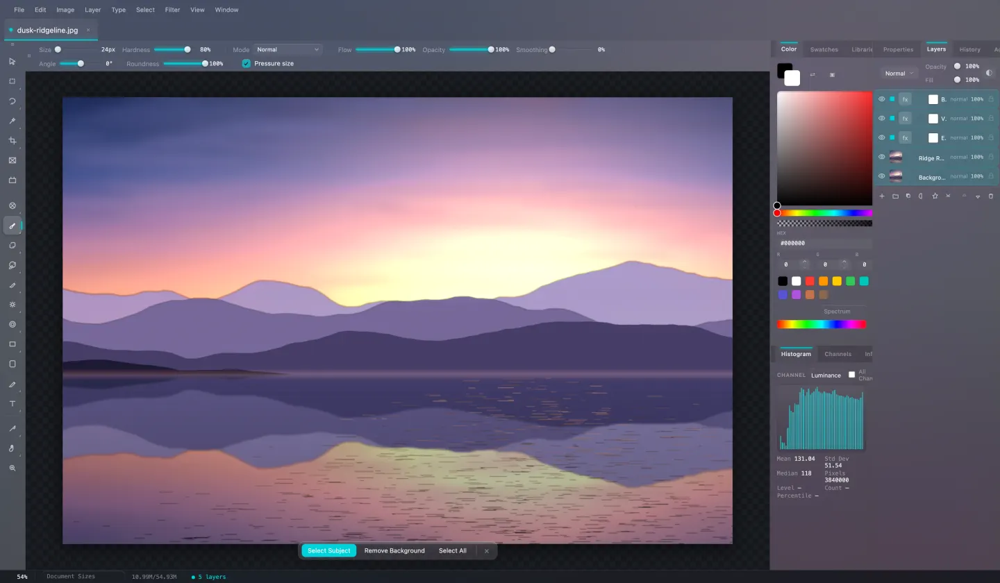
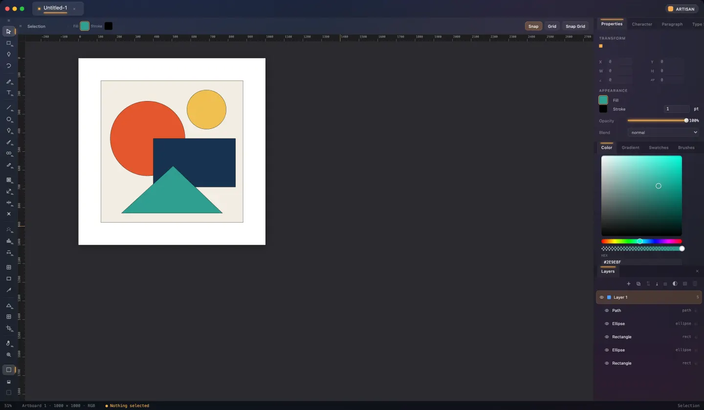
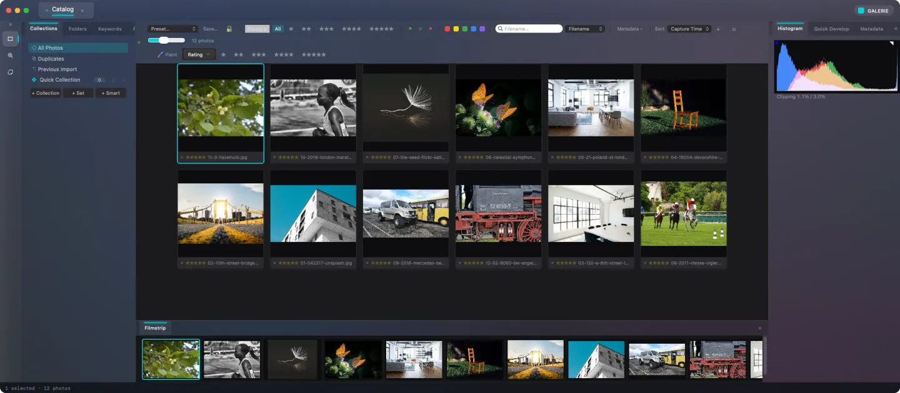
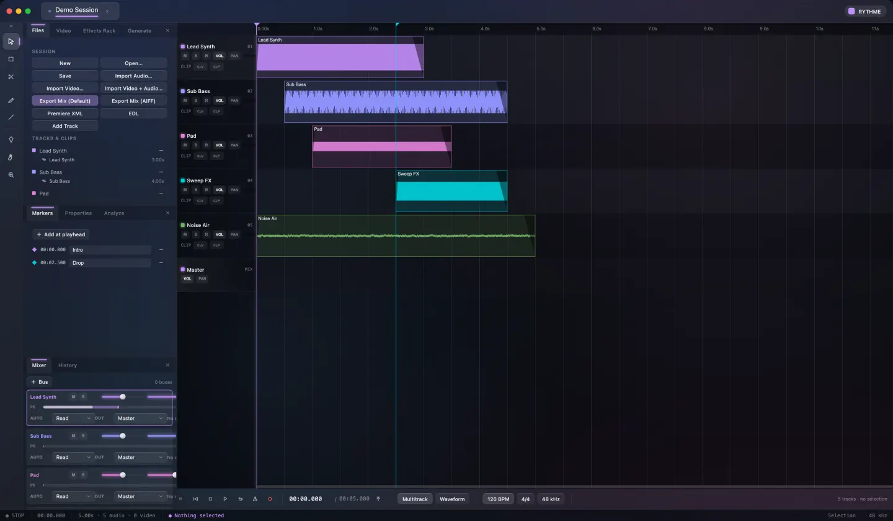
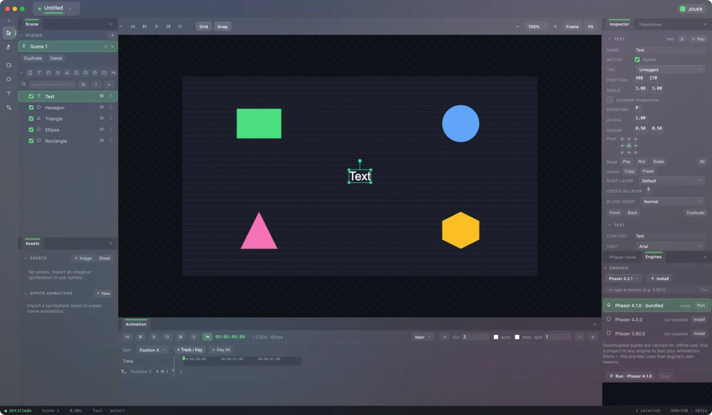
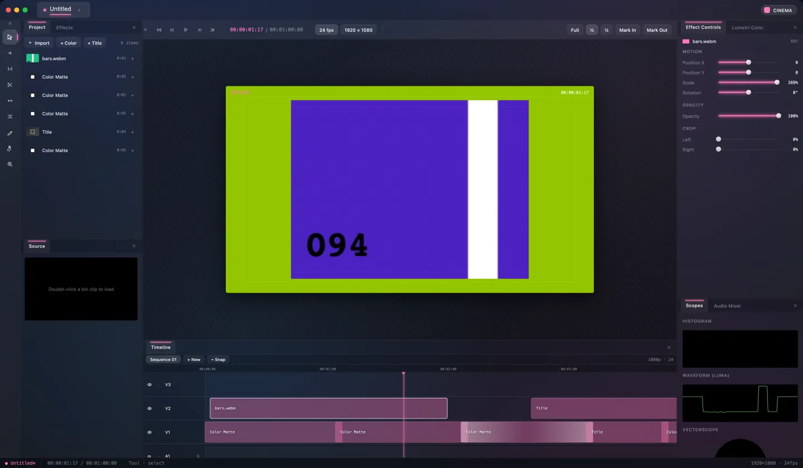
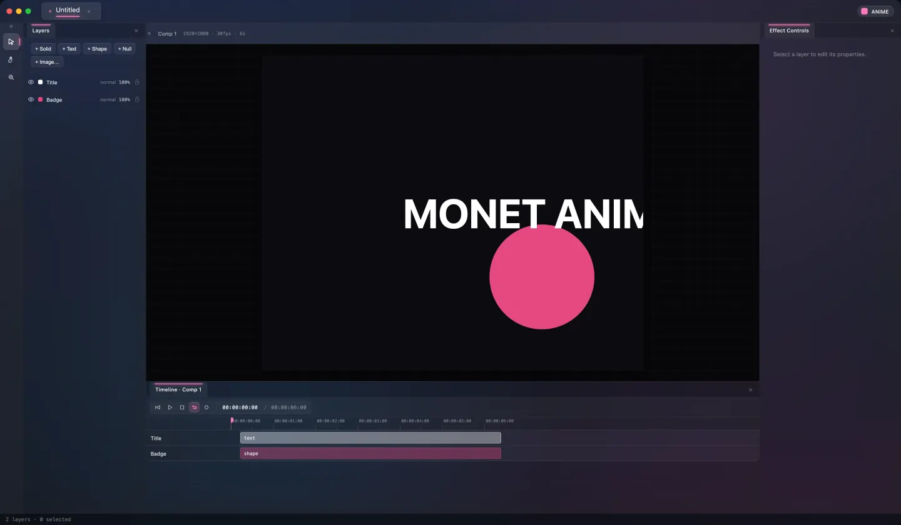

Seven desktop creative apps, one shared substrate. Here is how far each one actually is.
Monet is seven desktop creative applications — image editing, vector illustration, photo cataloguing, audio, video, motion graphics and 2D game authoring — built as a single monorepo. Every one of them is a Tauri 2 and React app sharing one UI design system, a merged Rust/WebAssembly render engine, a universal document format, and a generated automation surface that lets an agent drive the running app.
- Apps
- 7
- Unit tests passing
- 10,921
- Unit test files
- 1,255
- Lines of source
- 208,383
Shared capabilities
The substrate is the product. These ten rows are the things an app gets by being part of the monorepo rather than by being written twice.
| Capability | Vision | Artisan | Galerie | Rythme | Jouer | Cinema | Anime |
|---|---|---|---|---|---|---|---|
| Universal .monet documentOne document format every app can open | |||||||
| Rust/WASM enginePixel and geometry work compiled to WebAssembly | |||||||
| Native desktop shellA Tauri 2 window, not a browser tab | |||||||
| Undo and historyA real undo stack over the document model | |||||||
| MCP agent controlA generated surface for driving the running app | |||||||
| Unit testsVitest over the model, store and commands | |||||||
| End-to-end testsDriving the built app, not just its functions | |||||||
| Export and outputGetting finished work back out of the app | |||||||
| Cross-app interopHanding a document to a sibling app | |||||||
| Real-time collaborationMore than one person in one document |
The apps
Ordered by how much is built. Each row of an app is one feature area: the faint fill is how much of it exists, the lit fill is how much of it is also under test.
Monet Vision
Raster image editor · in the manner of Adobe Photoshop Wide coverage, not yet released 90% built 83% of that covered by tests
Monet Vision is a desktop editor for pixel images, covering layers, masks, selections, painting, adjustments, filters, text and vector shapes. It renders through the shared Rust/WebAssembly engine, reads and writes formats from PNG to PSD, and can be driven from outside the app over MCP.
- Neural Filters run on the UI thread, so a long job freezes the window
- Collaboration syncs brush strokes only, with no late-join snapshot
- No video layers
- Adjustments & filters 96% built 85% of that covered by tests Levels, curves, hue/saturation, colour balance, channel mixer, selective colour, shadows/highlights plus roughly 60 filter-gallery, blur, sharpen, noise and stylize filters with live preview.
- Layers & masks 95% built 85% of that covered by tests Layers, groups, clipping, layer and vector masks, 27 blend modes plus group pass-through, fill and adjustment layers, smart objects, layer effects, layer comps and labels.
- Painting & retouch 95% built 82% of that covered by tests Pressure-aware brushes with tips, presets and smoothing, eraser, clone stamp, healing, dodge/burn, bucket fill, gradients, patterns and history brush.
- Selection & transform 95% built 86% of that covered by tests Marquee, lasso, magic wand, quick and object select, colour range, select-and-mask, feathering, crop and perspective crop, free transform, warp and liquify meshes and straighten.
- File I/O & export 93% built 88% of that covered by tests PNG, JPEG, WebP, BMP, TIFF, GIF, AVIF, PDF, SVG and PSD import/export, native HEIC decode, layered .mvision projects, .monetgfx containers, slices, batch processing and web-export estimates.
- Automation & MCP 93% built 83% of that covered by tests 90 @mcp-wrapped commands with a generated 90-tool manifest and an mcp:check gate, Actions record and play with action sets, a sandboxed Worker scripting console, droplets, a presets manager and keyboard shortcuts.
- Text & vector 89% built 84% of that covered by tests Editable text layers with shaping, glyph panel, optical kerning, hanging punctuation, type-on-path and warp, plus vector shapes, pen paths, path operations and vector masks rasterized by the engine.
- Camera Raw & colour 91% built 85% of that covered by tests Camera Raw workspace with presets, sidecars and an 8-slot filmstrip, DNG handling, ICC profile import, soft proofing with black-point compensation, ICC-CMYK PSD export through the bundled ISOcoated_v2_300_eci press profile, and histogram/vectorscope/waveform scopes.
- Desktop shell 87% built 78% of that covered by tests Tauri 2 shell with a macOS menu bar, window chrome, screen modes, workspace presets and tabs, atomic saves, scoped filesystem capabilities, C2PA signing, printing and auto-recover.
- On-device ML 68% built 72% of that covered by tests onnxruntime-web wiring for style transfer, subject selection, MI-GAN/LaMa inpainting, super-resolution, denoise, sky replacement and Stable Diffusion 1.5 with a model registry and licence/integrity gates.
Monet Artisan
Vector illustration studio · in the manner of Adobe Illustrator Broad Illustrator coverage, real gaps remain 75% built 74% of that covered by tests
Monet Artisan is a desktop editor for vector artwork, where drawings are made of paths, shapes and text instead of pixels. It ships 75 tools, 28 panels and boolean path operations, and opens or saves SVG, PDF, Illustrator, CorelDRAW and Monet container files.
- Pathfinder, Offset Path, Shape Builder and Knife flatten curves to polygons
- No Type to Create Outlines and no Recolor Artwork
- PDF, JPEG, WebP and TIFF export unimplemented
- PDF/AI import skips clipping, text and images; CDR fills defaulted
- Rust/WASM renderer is opt-in only; SVG is the default path
- Document engine & store 90% built 88% of that covered by tests Pure-TypeScript geometry (vector, matrix, bezier, bounding box, path, offset), the item/layer/artboard document model with query and factories, and an Immer-backed observable store with transactions, labelled snapshot undo/redo capped at 250 entries and selection state.
- Tools & canvas 85% built 80% of that covered by tests 75 registered tools covering selection, direct and group select, lasso, magic wand, pen and anchor editing, pencil, paintbrush, blob brush, width, puppet warp, reshape, 7 liquify, 6 symbolism and 7 graph tools, shapes, transforms, shape builder, eraser, knife, scissors, gradient, mesh, perspective grid, live paint, artboard, slice, dimension and view tools.
- Layers & artboards 85% built 85% of that covered by tests Layer tree with lock, hide and template layers, collect-into-layer, release-to-layers, hide/lock-above, multi-artboard create/duplicate/delete, guides and rulers, slices, symbols, links, variables and actions.
- Shell, menus & panels 85% built 72% of that covered by tests Tauri 2 native-vibrancy window with Monet chrome, 28 docked panels, a 222-entry menu bar, 165 undo-wrapped commands, a keyboard shortcut registry with its own panel, tool rail flyouts and an options bar.
- Path ops & pathfinder 80% built 90% of that covered by tests All ten Pathfinder shape modes and effects plus offset path, outline stroke, simplify, join, average, round corners, compound paths, blends and the distort family (warp, roughen, tweak, zigzag, twist, pucker/bloat, scribble, free distort, liquify).
- Rendering 78% built 75% of that covered by tests React SVG renderer for artboards, items, paints, patterns, stroke alignment, caps and joins, blend modes, effect filters, outline mode, selection and tool overlays, guides and rulers, with an alternate Rust/WASM raster surface behind an opt-in flag.
- Type & typography 68% built 82% of that covered by tests Point, area and on-path type with inline editing, font switching, character, paragraph and type-style panels, case and smart-punctuation transforms, text decoration and caps, and lossless SVG/.artisan text round-trip.
- Color & appearance 65% built 85% of that covered by tests Solid, gradient and pattern paints, linear and radial gradients only, a quad-grid mesh approximation, swatches with ASE/ACO/ACT import, a colour harmony guide, edit-colors operations limited to invert, grayscale, saturate and desaturate, thin graphic-style and effect wrappers, an ordered appearance stack, opacity masks, blend modes and five live effect types.
- File I/O & export 62% built 76% of that covered by tests Imports .artisan JSON, the .monet container family, SVG/SVGZ, PDF, AI/EPS/PS and CDR through a magic-byte dispatcher with structured fidelity reports.
- MCP & collaboration 52% built 10% of that covered by tests 31 generated @mcp verbs served by the Tauri monet_mcp plugin on port 48212 against 165 total commands, plus opt-in Yjs collaboration that binds the store and renders live cursors.
Monet Galerie
Photo catalog and RAW develop · in the manner of Adobe Lightroom Classic Most modules built, gaps remain 72% built 69% of that covered by tests
Monet Galerie is a desktop application for organising a photo library and editing raw camera files without changing the originals. It keeps its catalog in SQLite, renders edits through the shared Rust/WebAssembly engine, and delivers results through export, print, web gallery, slideshow and book modules.
- No Map module: no map view, tracklogs or reverse geocoding
- No HDR or panorama photo merge
- No tethered capture and no face recognition
- MCP surface has no tests
- Export & publish 88% built 85% of that covered by tests Export dialog with presets, JPEG, PNG, TIFF8, PSD, 16-bit TIFF, linear DNG and original formats, watermarks, output sharpening, filename templates, metadata scoping and location removal, C2PA content credentials, post-export actions, publish services and an Edit-in-Vision round trip.
- Library & catalog 85% built 80% of that covered by tests Import with presets and previews, folder tree and sync, watched folders and auto-import, collections and smart collections, stacking, virtual copies, ratings, flags and labels, grid, loupe, compare and survey views, filmstrip, painter and filter bar.
- RAW & render engine 85% built 72% of that covered by tests Native RAW decode to scene-linear 16-bit RGBA, the shared Rust/WASM Camera-Raw develop ABI, ICC colour management, draft and full render tiers, a develop worker and scheduler, and DNG and linear-DNG output.
- Metadata & keywords 85% built 85% of that covered by tests IPTC and EXIF metadata panel with batch edit, metadata presets, keyword list, sets, entry and file import/export, XMP sidecar read/write with auto-write, capture-time editing and geotagging.
- Catalog storage & shell 85% built 70% of that covered by tests Tauri 2 native backend of about 23,000 lines of Rust with a versioned SQLite catalog at schema v16, atomic publish, backup policy, catalog merge, the .mgal universal container, previews and a secondary display window.
- Develop module 82% built 75% of that covered by tests Basic, Tone Curve, Color Mixer, Color Grading, Detail, Optics, Transform, Effects, Calibration, Profile and Point Color panels plus masks, heal and dust spots, red-eye, crop and straighten, targeted adjustment, before/after, reference view, presets, snapshots, history, copy/paste and auto sync.
- Print, Web, Slideshow, Book 72% built 80% of that covered by tests Print module with templates, pagination and page decoration, web gallery generation, slideshow with styles, templates and export, and a book layout module short of the full peer feature set.
- MCP live control 40% built 0% of that covered by tests 15 @mcp-tagged verbs covering library filter, module, import, selection and summary, photo rating, flag, label and make-master, develop sync, auto-sync and match-total-exposures, and keyword import/export, with a generated manifest and 15 matching handlers.
- Map & geolocation 25% built 75% of that covered by tests GPS coordinates on photos, a geotag dialog and location handling on export, but no Map module at all — no map view, tracklog import or reverse geocoding.
Monet Rythme
Multitrack audio workstation · in the manner of Adobe Audition Broad audio coverage, rough edges 70% built 64% of that covered by tests
Monet Rythme is a desktop workstation for recording, arranging and repairing audio across multiple tracks. Its processing, analysis and file-format code is framework-free TypeScript covering roughly fifty effects plus noise, hum and click removal, and it exports WAV and AIFF.
- The e2e harness fails on macOS: the in-window menu bar renders only on Windows, so 47 of 321 checks never run
- Effect racks and automation play back from an offline pre-render, not a live graph
- No VST or AU plug-in hosting, only path inventory
- No compressed-format encoding; export is WAV and AIFF only
- No React component tests: the audio UI is covered only through its model
- MCP control 90% built 58% of that covered by tests 118 generated MCP tools covering analysis, clip and range edits, effects, markers, export, panels and preferences, served natively by the monet-mcp Tauri plugin.
- Effects & DSP 88% built 92% of that covered by tests About 50 processors: amplify and normalize, biquad plus parametric, graphic, FFT, scientific and notch EQ, compressor, multiband, limiter, true peak, gate, delay, echo and analog delay, four reverbs, modulation, distortion, waveshaper, time stretch and pitch shift, and sidechain duck, compress and gate.
- Multitrack editing 85% built 88% of that covered by tests Clip move, trim, split and razor, ripple delete, insert silence, range cut/copy/paste, mix paste, crossfade, merge, clip groups, snapping, markers, per-clip gain and fades.
- Restoration 85% built 90% of that covered by tests Spectral noise reduction with a captured print, hiss reduction, adaptive noise reduction, DeHummer, DeClicker, DeClipper, DeReverb, automatic phase correction and delete silence.
- Analysis & metering 85% built 88% of that covered by tests FFT spectrum with peak hold, peak and RMS levels, BS.1770 loudness with LRA and true peak, loudness time series, amplitude statistics and histogram, phase analysis, vectorscope, spectrogram, YIN pitch detection and beat/tempo detection.
- UI & commands 80% built 28% of that covered by tests Audition-shaped 266-entry menu bar, dockable panels for files, effects rack, markers, properties, analyze, mixer and history, timeline and waveform-editor canvases, tool rail, transport bar, workspace layouts and keyboard shortcut presets.
- File IO & formats 72% built 85% of that covered by tests WAV at 8, 16, 24 and 32 bit plus float and AIFF/AIFC codecs with cue and MARK marker chunks, .monet container sessions, marker CSV round-trip, Premiere EDL and XML, and batch export.
- Plugins & hosting 20% built 60% of that covered by tests VST3, VST2 and AudioUnit path inventory and a validation model only — plugin-inventory.ts declares canProcess false and hostStatus inventoryOnly, so no plug-in is ever loaded or processed.
- Playback & recording 58% built 50% of that covered by tests Web Audio transport with per-track gain, pan, mute and solo, master fader, looping and playhead, input recording, device enumeration, output sink selection and control-surface mapping.
- Collaboration 35% built 0% of that covered by tests The timeline structure syncs through monet-collab with PCM stripped to descriptors, so unknown buffers resolve to silence because the audio blob side-channel is unbuilt.
Monet Jouer
2D game and animation editor · in the manner of Unity 2D Core loop complete, large peer-scope gaps 59% built 72% of that covered by tests
Monet Jouer is a desktop editor for 2D scenes and animations whose centre canvas is a live Phaser 4 game, so edits, physics and keyframes play back in the real engine. Projects save as Monet containers and export as standalone Phaser code that runs in a browser.
- No scripting or component system; object kinds are a fixed enum
- No tilemaps, particles, prefabs or 2D lights
- Animation is property tracks only: no state machine, blend trees or events
- No test drives the canvas pointer path, so the editor gizmos are uncovered
- src/mcp and src/collab have no test coverage
- Multi-engine preview 80% built 70% of that covered by tests Install extra Phaser builds from bundled files, local UMD bundles or on-demand jsDelivr downloads cached in IndexedDB, then run the whole project in any of them using that engine's own tween and animation systems.
- Phaser code export 70% built 90% of that covered by tests Deterministic generation of Phaser 4 code covering scene classes, chained tweens, sprite animations, transitions and physics bodies, emitted as standalone CDN-pinned HTML or a .js module with a live code preview panel.
- Scene transitions 70% built 60% of that covered by tests Fade, slide, wipe and zoom transitions between scenes, triggered manually or on pointer-down, key press or timer, authored in a panel and emitted into the exported game.
- Live viewport editing 65% built 50% of that covered by tests A real Phaser game canvas with select, move, scale, rotate, marquee and place tools, grid plus position, rotation and scale snapping, pivot handling, lock, frame-selected and move-to-view.
- Documents, MCP & collab 65% built 45% of that covered by tests Universal Monet container save and open as .mjou that couriers foreign entries back out untouched, a defensive schema-checked parser, clone-on-write undo/redo, 22 MCP verbs with a generated manifest, and opt-in Yjs collaboration.
- Scene & object model 55% built 85% of that covered by tests Multi-scene projects with sprite, image, text, shape and container objects, a nestable hierarchy with reparenting, search, sort and collapse, tags, sorting layers, selection sets and isolate mode.
- Animation timeline 55% built 85% of that covered by tests Per-object keyframe tracks on ten numeric properties, 18 easing curves, a scrubbable playhead with live playback, autokey and record, track mute/solo/lock, keyframe copy and frame stepping.
- Assets & sprite animations 45% built 70% of that covered by tests Image, spritesheet and audio assets embedded as data URLs, drag-and-drop import, spritesheet frame animations played in the editor, filter mode, pixel-art mode, sliced and tiled sprites and flipping.
- Physics & camera 45% built 85% of that covered by tests Arcade physics bodies (dynamic, static, kinematic) with velocity, acceleration, angular acceleration, gravity and bounce, collider size and offset, physics debug draw, per-scene gravity, and a game camera with follow, offset, smoothing, dead zone, bounds, zoom, scroll and roll.
- Audio 40% built 80% of that covered by tests Per-object audio sources with clip, volume, loop, mute, pitch and pan plus a project master volume applied in the exported game.
Monet Cinema
Non-linear video editor · in the manner of Adobe Premiere Pro Core loop works 54% built 41% of that covered by tests
Monet Cinema is a desktop video editor for importing clips, cutting them on a multi-track timeline and grading them. Frame compositing runs in a Rust/WebAssembly engine that the program monitor draws directly, and finished sequences export as an MP4 file or an EDL edit list.
- Only the razor tool has timeline drag behaviour; select, ripple, slip, slide, pen, hand and zoom are inert
- No keyframe animation: the Keyframe type exists but nothing evaluates it
- Effects browser adds blur, mosaic and ultra-key entries the compositor never renders
- Title clips place but rasterize nothing; video decode is canvas capture, not WebCodecs
- The Rust engine tests are run by no script or CI workflow
- Project I/O & delivery 65% built 65% of that covered by tests Universal .monet container save and open with a foreign-payload courier, legacy .cinema and .json projects, CMX3600 EDL export, MP4 export through WebCodecs VideoEncoder and mp4-muxer with baked AAC audio, and PNG frame export.
- Compositing engine 60% built 35% of that covered by tests Rust/WASM layer stack with affine transform, opacity, 14 blend modes, crop, wipe and iris progress, per-layer grade, 3D LUT upload, scopes and thumbnails.
- Shell & automation 60% built 25% of that covered by tests Tauri 2 Monet window with motion accent, dockable workspace, tool rail, transport bar, six docked panels, menu bar, Premiere-style shortcuts, 24 generated MCP tools and a dev-only window bridge.
- Timeline editing 55% built 75% of that covered by tests Multi-track video and audio, place, insert and overwrite, razor, ripple delete, drag-move across tracks, trim handles, snapping, duplicate, nudge, speed, slip and linked A/V in the edit operations.
- Media & bin 55% built 45% of that covered by tests File and drag import under both Tauri and the browser, dimension and duration probing, poster thumbnails, waveform peaks, media relink, colour mattes and title placeholder clips.
- Playback & monitors 50% built 15% of that covered by tests Request-animation-frame transport at sequence frame rate, J/K/L shuttle, loop, preview quality, a frame cache, the program-monitor blit and a source monitor with in and out points.
- Color & scopes 45% built 45% of that covered by tests Primary grading panel with exposure, contrast, highlights, shadows, whites, blacks, temperature, tint, saturation, vibrance, hue and gamma/lift/gain, .cube and .3dl LUT import with intensity, and histogram, waveform and vectorscope displays.
- Audio 45% built 20% of that covered by tests A Web Audio mix graph taking per-clip gain and fades into per-track gain with mute and solo, an offline render used by export, mixer strips and waveform peaks.
Monet Anime
Motion graphics compositing studio · in the manner of Adobe After Effects Core loop, large gaps 43% built 9% of that covered by tests
Monet Anime is a desktop editor for animated motion graphics, where layers are stacked in a composition and their position, scale, rotation and opacity change over time on a timeline. Preview happens in the browser layout engine, and the only output today is the saved project file, since nothing renders frames or video.
- No render queue and no video or frame export
- No masks, track mattes, parenting or pre-compositions
- Tests cover file I/O only; store, sampler, effects and MCP are untested
- No UI to create, switch or configure compositions
- Document I/O & interop 85% built 65% of that covered by tests Saves and opens the shared .monet container, dispatches by manifest across all seven Monet extensions, resaves byte-identically, carries other apps' payloads through untouched, imports images as embedded data URLs and accepts drag-and-drop.
- Undo & state 75% built 0% of that covered by tests Clone-on-write undo/redo stack capped at 200 entries, drag coalescing by key, a dirty flag, file-path tracking and React binding through useSyncExternalStore.
- Playback & transport 65% built 0% of that covered by tests Wall-clock request-animation-frame player with play, pause and loop, scrubbing with resync, frame stepping at composition frame rate, go-to-start and go-to-end and keyboard transport.
- MCP automation 55% built 0% of that covered by tests 19 @mcp verbs covering document open, layer add and delete, transform set, stopwatch and keyframing, effect add, composition settings and transport, with a generated manifest and a Tauri-side MCP server on port 48216.
- Workspace shell 40% built 0% of that covered by tests Dockable workspace with Layers, Effect Controls and Timeline panels, File, Edit and Layer menus, a status bar, an options bar and keyboard shortcuts.
- Keyframe animation 35% built 0% of that covered by tests Per-property tracks on the eight transform values, 18 easing curves, a stopwatch toggle, key-all-transform and timeline keyframe lanes with drag retiming.
- Compositing viewport 30% built 0% of that covered by tests Layers are composited as CSS-transformed DOM elements at the playhead with opacity, blend modes and filter effects, plus click-to-select and drag-to-move, in a 168-line viewport.
- Compositions & layers 30% built 20% of that covered by tests Five layer kinds (solid, shape, text, image, null) with visibility, lock, blend mode, in and out points and reordering inside a single active composition.
- Effects 8% built 0% of that covered by tests Five parametric effects — Gaussian blur, glow, drop shadow, brightness and tint — added per layer with an enable toggle and scrubbable numeric parameters, mapped onto CSS filters.
- Render output 5% built 0% of that covered by tests There is no rendered output: the only way work leaves the app is the saved .monet project document. No frame, image-sequence or video encoder exists anywhere in the app, and a render queue is listed as not yet built.
What they share
- Monet UI design systempackages/monet-ui provides the shared React chrome, panels, dialogs and native window styling, with one accent colour per app (raster, vector, motion, audio) so the seven apps look like one suite.
- Rust/WASM render enginepackages/engine is a single merged crate with raster, vector and camera-raw pipelines compiled to WebAssembly; Vision and Galerie run on it fully, Artisan uses it for an opt-in raster path, and Cinema keeps its own compositing crate.
- Universal .monet document formatOne container format with per-app extensions (.monetgfx, .mvision, .mgal, .mart, .mjou). Any app can open another app's file, and payloads it does not understand are written back out unchanged, so a round trip never destroys a sibling app's work.
- Generated MCP surfaceEach app tags commands with @mcp and generates a tool manifest served by a native Tauri plugin on its own port, so an external agent can drive the running application — from 15 verbs in Galerie to 118 in Rythme.
- Tauri 2 desktop shellEvery app ships as a native desktop window rather than a browser tab, with file-type associations, scoped filesystem capabilities, a fixed content-security policy and a per-app dev port checked by a shared test.
How these numbers were made
Test counts are measured. Every app's unit suite was run on 20 September 2026; the figures are what the runner reported. 10,921 passing.
Percentages are judgements, not instrumented coverage. Each app was audited against the scope its industry counterpart implies, area by area, citing files. A second pass then tried to knock the numbers down, and where it produced file-level evidence — a test that did not touch the path it claimed, a line count that had quietly swallowed the test files — the lower number is the one printed here.
Coverage is a share of what exists. An area that is a quarter built with all of that quarter tested reads 25% and 100%, and its bar stays a quarter full. This is why a young app cannot borrow the look of a finished one.
Not measured, and deliberately not claimed anywhere on this page: statement-level coverage, performance, release readiness, or a date for any of the gaps listed above.